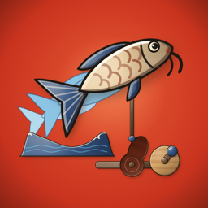

Crankwood: Cam Puppet Puzzles
Time the cams, cue the puppet
Every toy here runs on a hand crank and a cam: a carved wooden wheel whose shape becomes the motion. Pick the cam, turn it to the right beat, and crank. When the woodpecker pecks on time, it fills the gaps in the tune.
A blue ghost shows the motion each toy should make. Choose cams, set their timing and link levers until the carved puppet follows the ghost beat for beat: a leaping carp, a blacksmith at the anvil, a water-powered rice pounder, a lion dance at the Mid-Autumn Fair.
- 40 puzzles in six river towns
- Folk toys from Vietnam and around the world, with a maker's note for every river town
- Every finished toy goes on your toy shelf to watch again